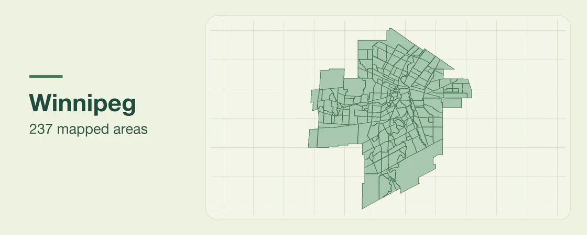

Winnipeg Housing & Zoning Reform Simulator
I built this simulator after attending Winnipeg’s zoning consultation. It combines City assessment, permit and census records with transit schedules across 237 mapped areas. Readers can compare scenarios by changing assumptions about zoning, development take-up and non-market housing. The tool makes its sources, methods, limits and scenario data available for review.